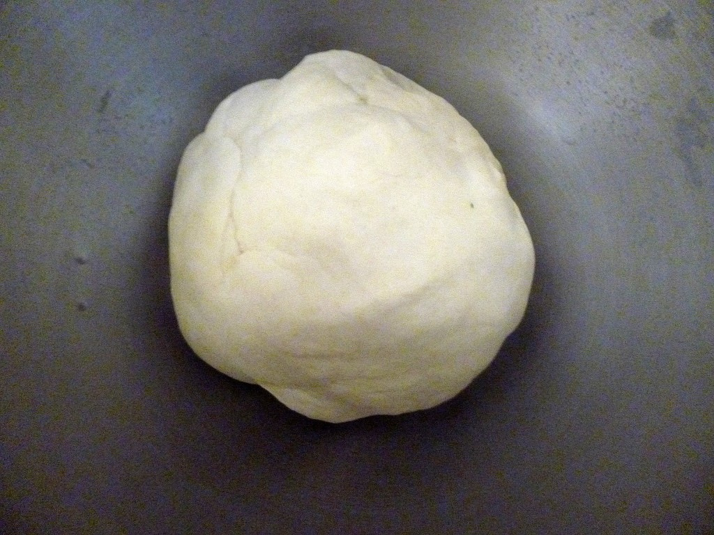
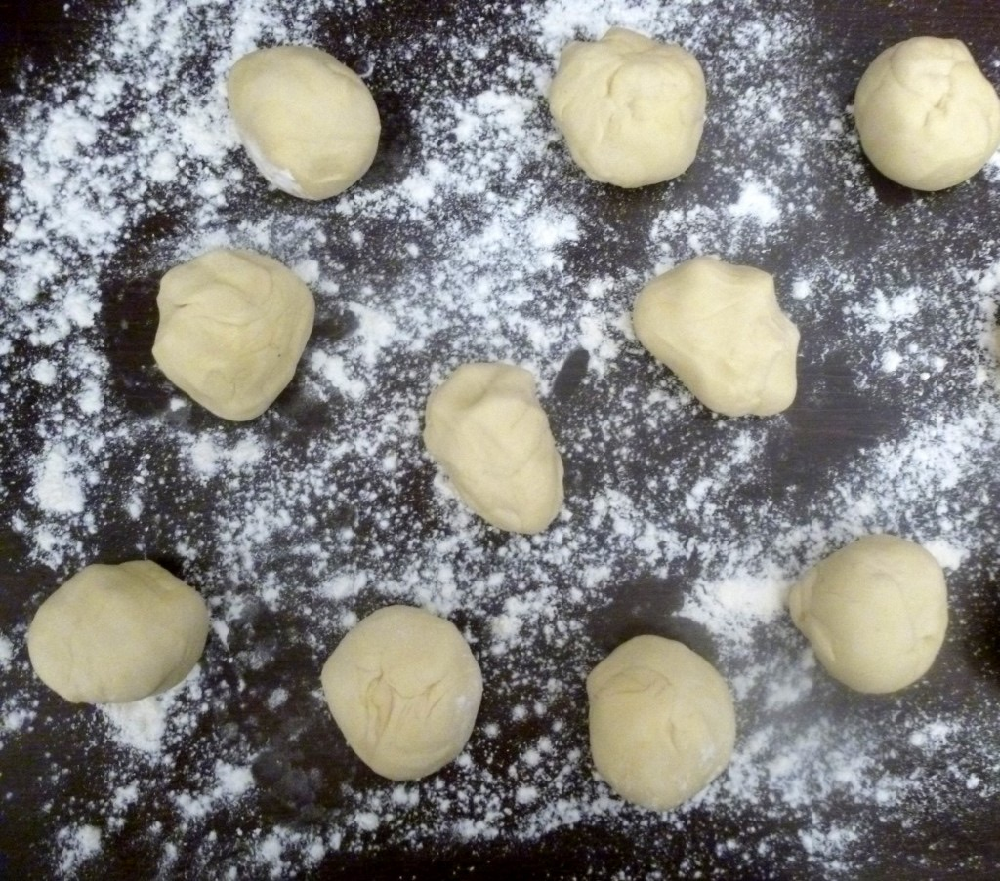
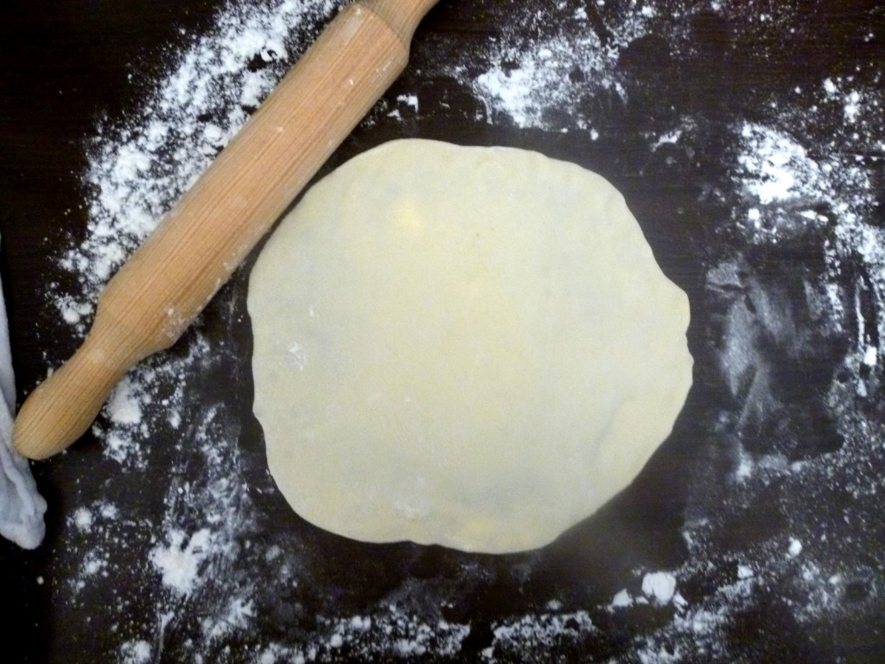

Tortillas maison

Pour manger d’excellentes tortillas maison c’est par ici!!
Après le guacamole (recette ICI) nous revoilà avec les tortillas!! Alors franchement je ne sais pas comment appeler ces galettes car pour moi qui suis d’origine Espagnole une Tortilla est une omelette!! J’ai chercher sur internet et apparemment ça se dit bien tortilla aussi alors va pour tortilla^^
Ces galettes omniprésentes dans la cuisine mexicaine se préparent traditionnellement à partir de graine ou farine de maïs aussi avec de la farine de blé!
Les tortillas peuvent être garnies de viandes, poissons, légumes, fromage… Les garnitures les plus réputées chez nous étant celles des fajitas, burritos, tacos, enchiladas..
Faire soi même ces tortillas c’est vraiment pas sorcier et c’est bien meilleur que les galettes « caoutchouteuses » que l’on peut trouver dans le commerce!
Je vous laisse découvrir la recette 🙂
Ingrédients
- Farine - 400 g
- Eau (tiède) - 220 ml
- Huile d'olive - 50 ml
- Sel - 1 càc
Instructions
- Dans une jatte, mélanger la farine et le sel
- Creuser un puit
- Dans un même récipient, verser l'eau tiède et l'huile d'olive (moi j'utilise mon verre doseur) Traditionnellement il n'y a pas d'huile d'olive dans les tortillas mais du Saindoux
- Incorporer petit à petit les liquides au mélange
- Pétrir la pâte jusqu’à obtenir une boule assez homogène qui ne colle pas
- Couvrir d'un torchon et laisser reposer la pâte 30min à 1h
- Peser la pâte
- Diviser la pâte en 10 petits pâtons de même poids
- Couvrir les pâtons d'un torchon pour ne pas qu'ils sèchent
- Mettre un peu de farine sur votre plan de travail
- A l'aide d'un rouleau à pâtisserie façonner vos tortillas Les galettes doivent être très fines!
- Faire chauffer une poêle (type poêle à crêpes)
- Cuire vos tortillas (environ 1min30 de chaque côté) (je ne mets pas de matière grasse) De petites(ou grosses bulles) vont se former pendant la cuisson,c'est normal et ce qu'il faut voir!!
- Emballer vos tortillas dans du papier aluminium pour les conserver jusqu’à l'heure du repas Vous pouvez les faire réchauffer quelques minutes avant de servir et il est également possible de les congeler!!!
- Garnir les tortillas de ce qui vous fait plaisir!! Bon app'!



Les tips de la communauté
Tortillas maison très appréciées pour leur facilité et leur goût supérieur aux versions du commerce. Recette rapide qui change la perception des galettes achetées. Plusieurs testages confirment le résultat moelleux et chaud. Pâte adaptable à différentes farines.
Astuces
- Bien aplatir les tortillas avant cuisson pour une bonne cuisson
- Conserver dans un tupperware fermé pour éviter qu'elles ne durcissent
- Réchauffer au four (8-10 min enveloppées dans du papier alu) ou micro-ondes le jour suivant
- Diviser la recette pour 8 tortillas plus grandes plutôt que 10 petites selon les préférences
- Adaptable avec farine complète ou autre type de farine
Variantes suggérées
- Utiliser pour faire des wraps remplis
- Réduire les portions pour en faire 8 au lieu de 10 (plus grandes)
Ajustements signalés
- Bien aplatir les tortillas sinon elles cuisent mal - le bien aplatir est essentiel